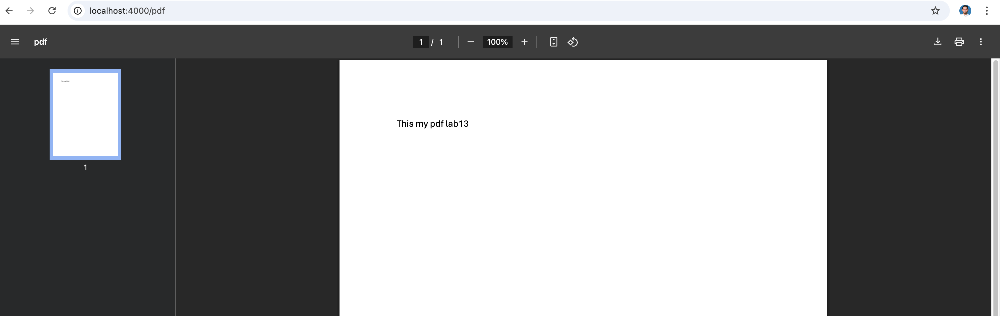

Question1: What will be outputs in ES module and CommonJS module?
import fs from "fs"; // or const fs = require('fs');
process.nextTick(() => console.log('nextTick 1'));
Promise.resolve().then(() => console.log('promise 1'));
setImmediate(() => { console.log('setImmediate 1') });
setTimeout(() => console.log('setTimeout 1'), 0);
fs.readFile('./files/input.txt', "utf-8", (err, data) => {
if (err)
console.log('there is an error. can not read from file');
else {
console.log(data);
}
});
Output
Module output
promise 1
nextTick 1
setImmediate 1
setTimeout 1
Solution for lab 13
CommonJS output
nextTick 1
promise 1
setTimeout 1
setImmediate 1
Solution for lab 13
Question2: Create a web server using http module:
- If the path is ‘/image’ and method is GET, send a response of an image to any client. Set an appropriate content-type for your image.
- If the path is ‘/pdf’ and method is GET, send a response of a pdf file to any client. Set a Content-type as "application/pdf".
- If the path is ‘/about’ and method is GET, send a response of a txt file to any client. Set a Content-type as "text/plain".
- If the path is ‘/home’ or ‘/’ and method is GET, send “Welcome to my website” text.
- Otherwise return not found with status code 404.
The solution is at the server.js file
import http from 'http';
import fs from 'fs';
const server = http.createServer((req,res) => {
const url = req.url;
const method = req.method;
if(url === '/' || url === '/home' && method === 'GET'){
res.setHeader('Content-Type', 'text/html');
res.write('Welcome to my website');
res.end();
}else if(url === '/image' && method === 'GET'){
const src = fs.createReadStream('./img/headeset.jpg');
src.pipe(res);
}else if(url === '/pdf' && method === 'GET'){
res.setHeader('Content-Type', 'application/pdf');
const src = fs.createReadStream('./files/lab13.pdf');
src.pipe(res);
}else if(url === '/about' && method === 'GET'){
res.writeHead(200, { 'Content-Type': 'text/plain' });
res.write('Hello World!lab 13');
res.end();
}else{
res.writeHead(404, { 'Content-Type': 'text/plain' });
res.end('404 page not found');
}
});
server.listen(3000, () => {
console.log('Running on port 3000');
});
Calling default / or /home
Calling /image

Calling /pdf
Calling /about
Calling /404 page
Question3: practice the fs.readFileSync(), fs.readFile(), fspromises.readFile(), and fs.createReadStream() methods. What are the differences?
The methods fs.readFileSync(), fs.readFile(), fs.promises.readFile(), and fs.createReadStream() are all used to read files in Node.js, but they differ in synchronous vs. asynchronous behavior, streaming vs. whole file reads, and API style.
import fs from 'fs';
import fspromises from 'fs/promises';
import url from 'url';
import path from 'path';
//fs.readFileSync()
let __filename = url.fileURLToPath(import.meta.url);
let __dirname = path.dirname(__filename);
let filepath = path.join(__dirname,'/files/input.txt');
let fsAsycn = fs.readFileSync(filepath,'utf-8');
console.log('readFileSync: ',fsAsycn);
//fs.readFile()
fs.readFile(filepath,{encoding: 'utf-8'}, (err, data) =>{
if(err) throw err;
console.log('readFile: ',data);
});
//fspromises.readFile()
try {
let content = await fspromises.readFile(filepath,'utf-8');
console.log('fsPromise: ',content);
} catch (error) {
console.error('Faile to read data');
}
//fs.createReadStream()
const readable = fs.createReadStream(filepath,{highWaterMark: 5, encoding: 'utf-8'});
readable.on('data',function(chunk){
console.log(chunk);
})
Solution:
readFileSync: Solution for lab 13
readFile: Solution for lab 13
fsPromise: Solution for lab 13
createReadStream: Solut
createReadStream: ion f
createReadStream: or la
createReadStream: b 13